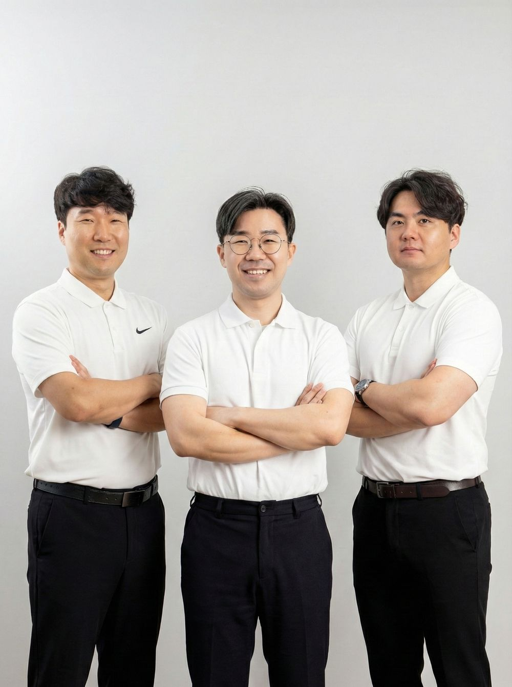
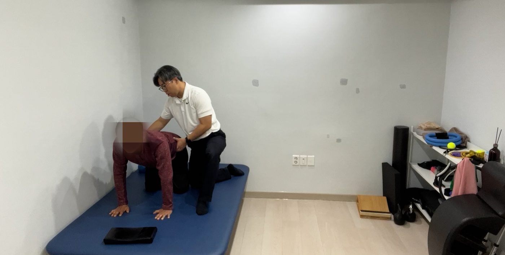
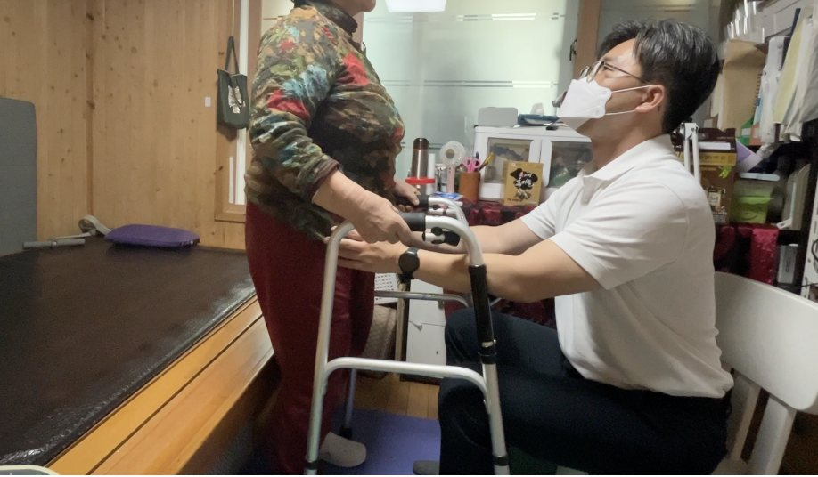
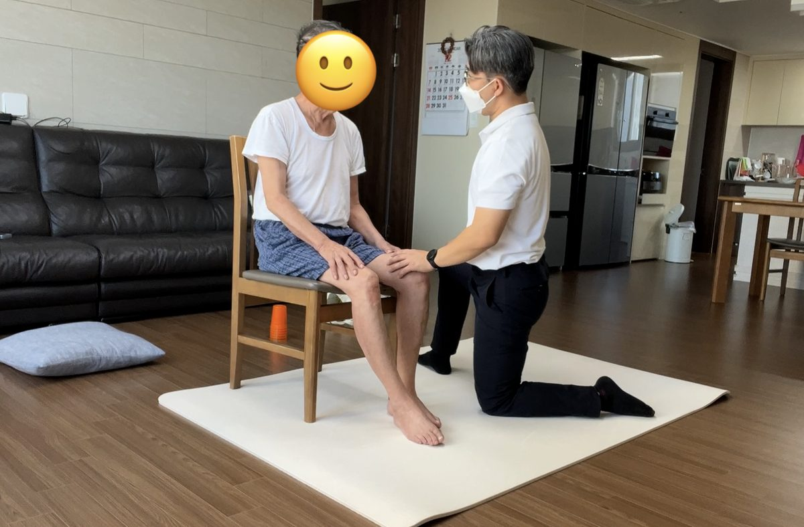
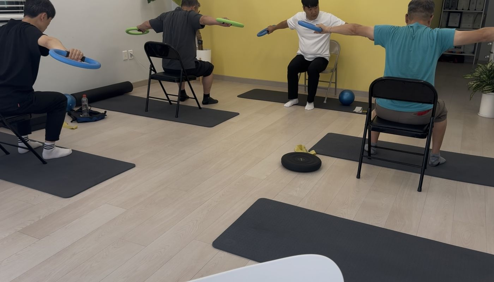
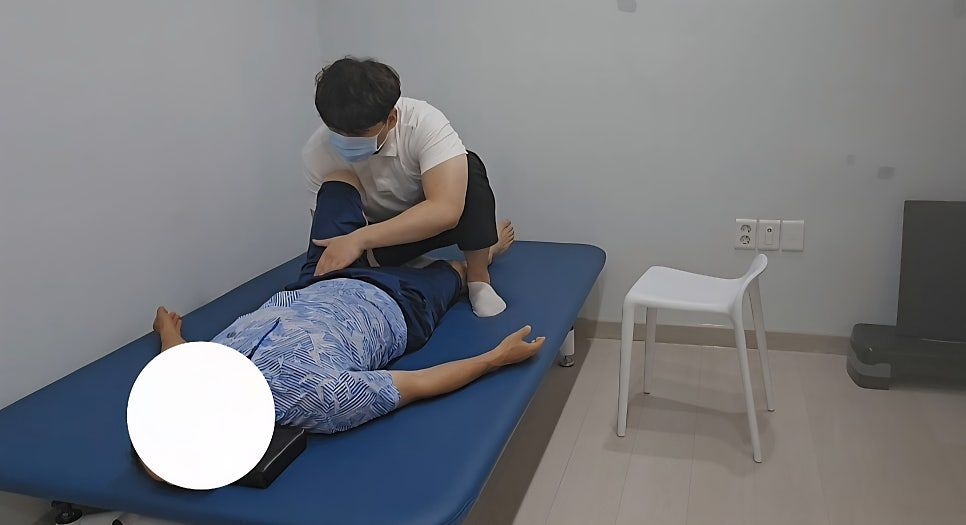
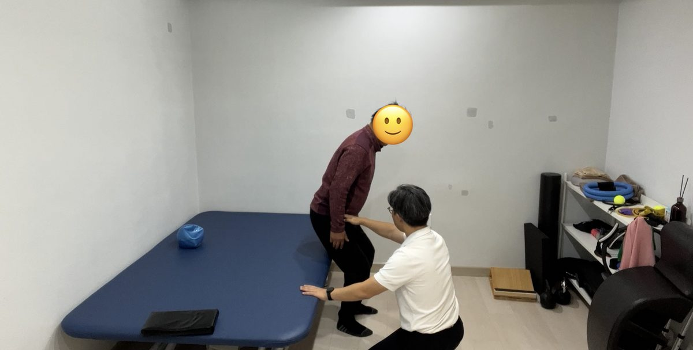
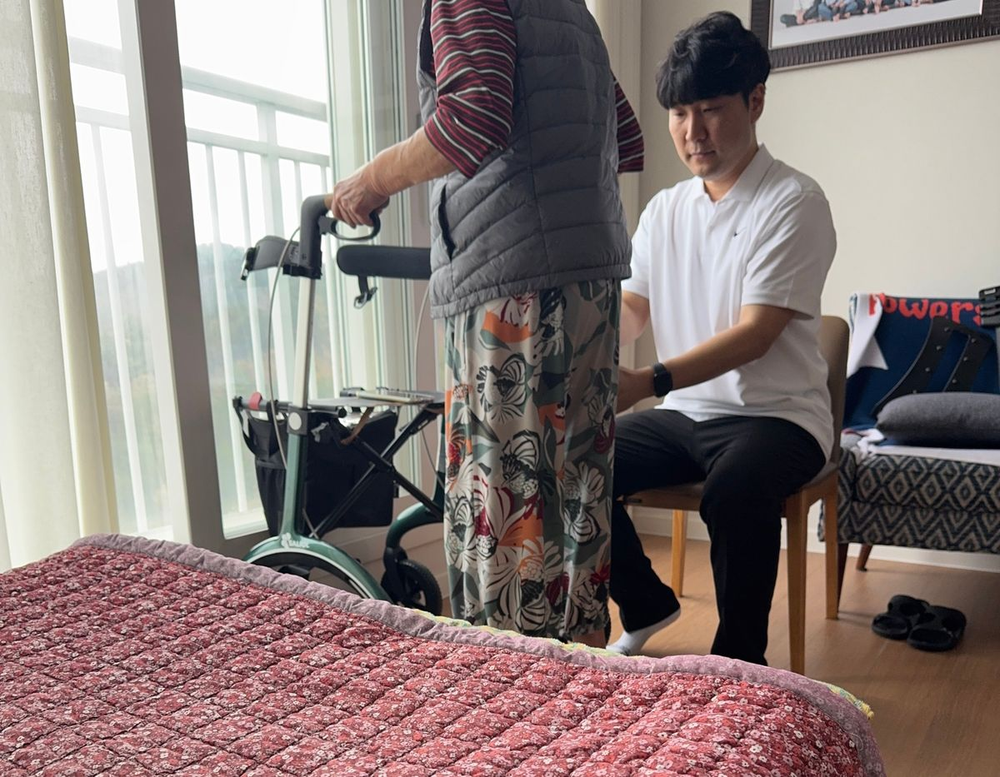
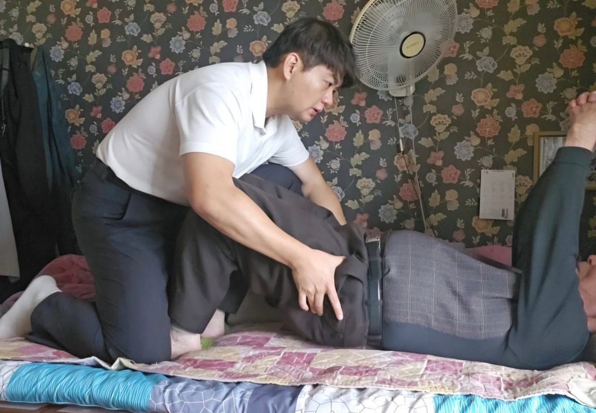
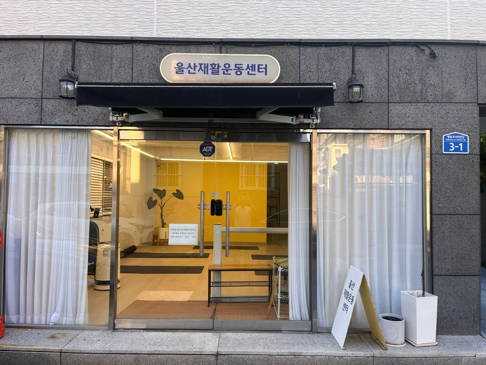

병원 치료가 끝난 뒤,
다시 걷고 움직이는 일상까지 함께합니다
뇌졸중, 파킨슨, 인공관절·골절 수술 후, 거동이 불편한 어르신까지. 병원 경력 10년 이상의 물리치료사·작업치료사 출신 재활운동전문가들이 현재 몸 상태를 평가하고 1:1로 운동을 설계합니다.

- 시작
- 2021년 방문재활로 출발
- 대표 경력
- 물리치료사 출신 17년
- 재활운동전문가
- 전원 병원 경력 10년 이상
- 운영 형태
- 사회적기업 인증
집에서 시작해, 지역의 재활운동 센터가 되었습니다
울산재활운동센터는 2021년 ‘울산방문재활운동센터’라는 이름으로, 거동이 불편한 분들의 댁을 찾아가는 방문재활운동에서 시작했습니다. 지금은 남구에 운동 공간을 두고, 센터 1:1 운동, 파킨슨 그룹 운동, 방문재활운동, 지자체 위탁 운동서비스를 함께 운영합니다.
2026년 사회적기업 인증을 받았습니다. 운동이 필요하지만 비용이나 이동이 부담인 분들도 꾸준히 운동할 수 있도록 정부지원 사업을 적극적으로 연결합니다.
- 대표임재우 · 물리치료사 출신 재활운동전문가 (임상 17년)


뇌졸중, 파킨슨 이후에도 다시 일상 동작을 연습합니다
뇌졸중, 파킨슨, 척수손상 같은 신경계 질환은 원인은 다르지만, 걷기와 균형, 일어서기처럼 매일 하는 동작이 어려워진다는 점이 같습니다. 센터는 질환별 특성에 맞춰 현재 움직임을 평가하고, 일상에 필요한 동작을 반복해서 연습합니다.
뇌졸중 후 1:1 재활운동 개인 · 방문 가능
퇴원 후 마비된 쪽 팔다리 사용, 일어서기와 걷기, 균형, 계단 오르내리기를 단계적으로 연습합니다. 작업치료사 출신 전문가가 손 기능과 옷 입기, 식사 같은 일상생활 동작도 함께 연습합니다. 거동이 어려우면 댁으로 찾아갑니다.
파킨슨 LSVT BIG 1:1 운동 개인
걸음이 작아지고 동작이 느려지는 변화에 맞춰, 걸음 폭·방향 전환·일어서기를 크게, 정확하게 움직이도록 반복 연습합니다.
그 밖의 신경계 질환 1:1 재활운동 개인 · 방문 가능
척수손상, 외상성 뇌손상, 말초신경 질환 등으로 움직임이 불편해진 분께 현재 상태에 맞춘 근력·균형·보행 운동을 진행합니다. 가능 여부는 상담으로 먼저 확인해 드립니다.
파킨슨 그룹 운동 주 2회 · 회당 1시간
비슷한 고민을 가진 분들과 함께 의자·매트·소도구로 운동합니다. 꾸준히 나올 이유가 생기는 것이 그룹의 가장 큰 장점입니다.
LSVT BIG은 파킨슨 환자를 위해 개발된 운동 프로그램이며, 인증을 받은 전문가만 진행할 수 있습니다. 운동은 담당 의사의 진료를 대신하지 않습니다.


고관절·무릎 수술 후, 혼자 걷기까지
퇴원 후에는 병원 물리치료가 줄어드는데, 근력과 균형은 아직 돌아오지 않은 경우가 많습니다. 수술 부위의 주의사항을 지키면서 단계별로 운동 강도를 올립니다.
- 첫 평가수술 종류와 시기, 병원 주의사항, 현재 걷기·일어서기 능력을 확인합니다.
- 관절 움직임과 근력 회복허용된 범위 안에서 관절 가동 범위와 엉덩이·허벅지 근력을 회복합니다.
- 균형과 걷기보조기 사용을 줄이고, 계단과 방향 전환처럼 실제 생활 동작을 연습합니다.
- 스스로 하는 운동집에서 이어갈 운동을 정리해 드려 센터를 졸업한 뒤에도 유지하도록 돕습니다.
대상: 인공 고관절·무릎관절 수술, 고관절 골절 수술, 인대 재건술 후 등. 수술받은 병원에서 안내받은 주의사항을 확인한 뒤 그 범위 안에서 진행합니다.


센터에 오기 어려우시면, 댁으로 찾아갑니다
센터의 시작이 방문재활이었습니다. 거동이 불편한 어르신, 퇴원 직후라 외출이 힘든 분을 위해 재활운동전문가가 직접 댁이나 시설로 찾아가 1:1로 운동합니다. 집 구조에 맞춰 침대에서 일어나기, 화장실 이동, 보행기 걷기처럼 매일 하는 동작을 그 자리에서 연습할 수 있습니다. 필요하면 작업치료사 출신 전문가가 집안 동선과 생활 환경에 맞는 동작 방법도 함께 안내합니다.
아래 정부지원 사업의 대상이라면 본인부담을 줄여 이용할 수 있습니다. 대상 여부는 전화로 먼저 확인해 드립니다.


| 정부지원 사업 | 이런 분께 | 신청 창구 |
|---|---|---|
| 울주형 건강맞춤 방문운동 서비스 | 울주군 거주, 통합돌봄 대상 어르신 (회기제 방문 운동) | 울주군 통합돌봄 담당 부서 의뢰 |
| 지역사회서비스투자사업 | 소득 기준에 해당하는 운동이 필요한 지역 주민 | 주소지 행정복지센터 |
| 일상돌봄서비스 | 돌봄이 필요한 청·중장년 및 가족돌봄 청년 | 주소지 행정복지센터 |
| 장애인스포츠강좌이용권 | 등록 장애인 (만 12–64세) | 국민체육진흥공단 누리집, 행정복지센터 |
처음 문의하실 때 많이 물어보세요
비용은 얼마인가요?
현재 몸 상태와 목표에 따라 프로그램 구성과 횟수가 달라 첫 상담 후 안내해 드립니다. 정부지원 서비스 대상자는 본인부담금이 줄어들거나 없을 수 있습니다.
파킨슨 진단을 받았는데 운동을 시작해도 되나요?
담당 의사 선생님과 상의한 뒤 시작하시길 권합니다. 센터에서는 LSVT BIG 인증을 받은 재활운동전문가가 현재 걷기, 균형, 일상동작을 평가한 뒤 1:1 또는 그룹 운동 중 맞는 방식을 안내합니다.
뇌졸중으로 퇴원했는데 운동을 받을 수 있나요?
네. 병원 재활치료를 마치고 퇴원한 뒤 일상 동작을 이어서 연습하려는 분들이 많이 찾아오십니다. 현재 걷기, 균형, 팔다리 사용 정도를 평가한 뒤 센터 1:1 또는 방문 운동으로 진행하며, 담당 의사의 진료와 함께 하시길 권합니다.
인공관절 수술 후 언제부터 다닐 수 있나요?
퇴원 후 병원에서 허락한 운동 범위 안에서 시작합니다. 수술 기록과 주의사항을 가져오시면 그에 맞춰 단계별로 운동을 진행합니다.
집으로 방문도 가능한가요?
네. 거동이 불편하신 분을 위해 재활운동전문가가 댁으로 찾아가는 1:1 방문재활운동을 운영합니다. 울산 전 지역 상담 가능하며 거리에 따라 일정을 조율합니다.
정부지원 서비스는 어떻게 신청하나요?
사업마다 신청 창구가 다릅니다. 지역사회서비스투자사업과 일상돌봄서비스는 주소지 행정복지센터, 장애인스포츠강좌이용권은 국민체육진흥공단 누리집, 울주형 건강맞춤 방문운동 서비스는 울주군 통합돌봄 담당 부서를 통해 신청합니다. 전화 주시면 대상 여부부터 함께 확인해 드립니다.
주말이나 저녁에도 운영하나요?
평일 월요일부터 금요일, 오전 9시부터 오후 8시까지 예약제로 운영합니다. 토요일과 일요일은 운영하지 않습니다.
예약제로 운영합니다
- 주소
- 울산광역시 남구 팔등로109번길 3-1, 1층
- 운영시간
- 월–금 09:00–20:00
토·일 휴무 - 예약 상담
- 0507-1315-5456
